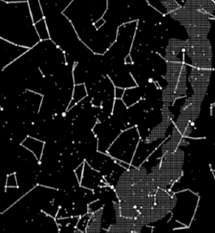
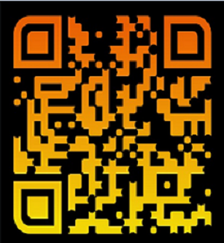
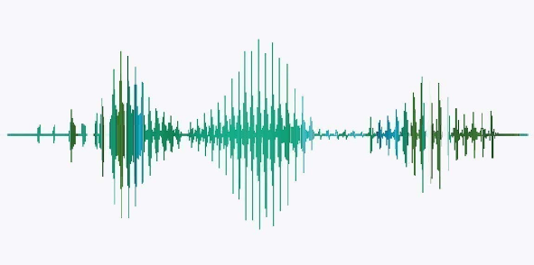

Nuestro Blog
Un regalo único
¡Puedes pedir fácilmente un regalo inolvidable que seguramente traerá una sonrisa a las caras de los destinatarios. Ahorra el tiempo, las compras aburridas y sin copiar la idea de otros! Confía en nosotros ¡el número de clientes encantados con los mapas estelar personalizados sigue creciendo con cada instante!
¿QUE ES UN MAPA ESTELAR?

Son la representacion unica de constelaciones y estrellas de un momento especifico de tu vida. Ya sea una fecha de nacimiento, aniversario, un primer beso, cualquier acontecimiento importante y feliz para conmemorar. Sin duda son un lindo detalle para obsequiarselo a tu pareja, amig@s o seres queridos, en el cual estara plasmado el cielo estrellado conforme al dia especial y las coordenadas del lugar.
Los mapas estelares de Star kitty son realistas y absolutamente únicos; los dibujamos basándonos en la base de datos del catálogo de estrellas de la NASA, donde los datos provienen de misiones planetarias pasadas y presentes, observaciones astronómicas y mediciones de laboratorio. Gracias a nuestra gran atención y la combinación de un poco de magia con la ciencia, el mapa de tus recuerdos será extremadamente detallado y preciso.
¿Que incluye un Mapa estelar?
- Nombres y Apellidos
- Fecha especial, Lugar y hora
- Dedicatoria o frase corta
- Coordenadas
- Foto (si el diseño que elige incluye foto)
- Codigos QR
- Codigo de Spotify
- Soundwave
¿Que es un Codigo QR?
Un código QR es un código de barras bidimensional cuadrada que puede almacenar los datos codificados. Agrega códigos Qr a tu mapa de estrellas, cada uno de los códigos al momento de ser escaneado te redirige a un enlace de un sitio web. Puede ser una foto, un video, una canción o playlist en youtube que quieras dedicarle a esa persona especial.
¿Que es un codigo de Spotify?

Los códigos Spotify funcionan de manera similar a un código QR, con la única diferencia que están pensados únicamente para ser leídos por la aplicación de Spotify, funciona al generar un código único de una pista, álbum o lista de reproducción que desees compartir. Luego, el destinatarios puede escanear ese código y ser llevado instantáneamente a la música para que pueda ser reproducida. Esta es otra opción para que puedas dedicar una canción de una manera ingeniosa
¿Que es un Sound Wave?
Las sonoras que contienen mensajes pregrabados por los usuarios o datos, que pueden ser decodificados y reproducidos por una aplicación. También te damos la opción de incluír un soundwave a ru Starmao, que de igual forma puede contener una foto, video, canción ó nota de voz instantánea, todo esto en forma de realidad aumentada, es decir al momento de ser escaneado da una impresión en 3D. Es todavía más espectacular!